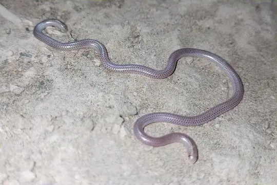
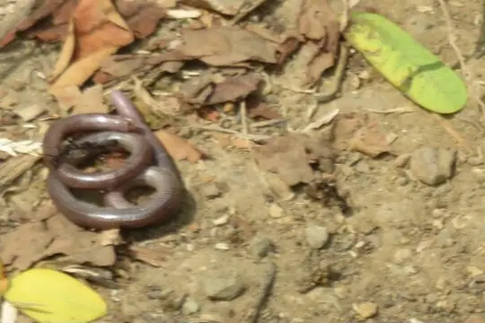
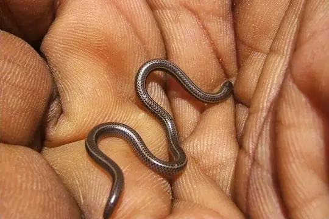

Leptotyphlopidae
The family Leptotyphlopidae (thread snakes) has 145 living species in SnakeList (none venomous), in 14 genera.
- 145living species
- 145non-venomous
- 14genera
About the family
Very thin, worm-like burrowing snakes with reduced eyes under the head scales. They live in North and South America, Africa and Asia, and feed on ants and termites.[1]
Like other blind snakes, they are rarely seen because they live underground, and many species are poorly known.[1]
Species
Showing 145 species
- No photo yetAdler's Worm SnakeMyriopholis adleri
 Amaral's Blind SnakeTrilepida koppesi
Amaral's Blind SnakeTrilepida koppesi Bailey's Blind SnakeTrilepida anthracina
Bailey's Blind SnakeTrilepida anthracina Bakewell's Blind SnakeEpictia bakewelli
Bakewell's Blind SnakeEpictia bakewelli- No photo yetBarbados ThreadsnakeTetracheilostoma carlae
- No photo yetBenguela Worm SnakeNamibiana latifrons
 Big-scaled Blind SnakeTrilepida macrolepis
Big-scaled Blind SnakeTrilepida macrolepis Black Blind Snake (ater)Epictia ater
Black Blind Snake (ater)Epictia ater Black Blind Snake (fallax)Epictia fallax
Black Blind Snake (fallax)Epictia fallax Black Blind Snake (magnamaculata)Epictia magnamaculata
Black Blind Snake (magnamaculata)Epictia magnamaculata Black Thread SnakeLeptotyphlops nigricans
Black Thread SnakeLeptotyphlops nigricans- No photo yetBlack-tip Worm SnakeLeptotyphlops nigroterminus
- No photo yetBocage's Blind SnakeNamibiana rostrata
 Boettger's Cape Thread SnakeRena boettgeri
Boettger's Cape Thread SnakeRena boettgeri- No photo yetBouet's Worm SnakeMyriopholis boueti
 Boulenger's Blind SnakeMyriopholis macrura
Boulenger's Blind SnakeMyriopholis macrura- No photo yetBrazilian Blind SnakeTrilepida brasiliensis
- No photo yetBroadley's Thread SnakeTricheilostoma broadleyi
- No photo yetBury's Worm SnakeMyriopholis burii
 Cairo Blind SnakeMyriopholis cairi
Cairo Blind SnakeMyriopholis cairi- No photo yetCameroon Thread SnakeMyriopholis perreti
 Cape Thread Snake (conjunctus)Leptotyphlops conjunctus
Cape Thread Snake (conjunctus)Leptotyphlops conjunctus Caqueta Blind SnakeTrilepida brevissima
Caqueta Blind SnakeTrilepida brevissima Collared Blind SnakeHabrophallos collaris
Collared Blind SnakeHabrophallos collaris Common Peru Blind SnakeEpictia diaplocia
Common Peru Blind SnakeEpictia diaplocia Dainty Blind SnakeTrilepida dimidiata
Dainty Blind SnakeTrilepida dimidiata Damara Thread SnakeNamibiana labialis
Damara Thread SnakeNamibiana labialis- No photo yetDark Blind SnakeEpictia melanura

Degerbol's Blind SnakeSiagonodon borrichianus Distant's Thread SnakeLeptotyphlops distanti
Distant's Thread SnakeLeptotyphlops distanti- No photo yetDrewes' Worm SnakeEpacrophis drewesi
- No photo yetDugand's Blind SnakeTrilepida dugandi
- No photo yetDuges' ThreadsnakeRena dugesii
- No photo yetEleven-striped Blind SnakeEpictia undecimstriata
 Emin Pasha's Worm SnakeLeptotyphlops emini
Emin Pasha's Worm SnakeLeptotyphlops emini- No photo yetEritrean Worm SnakeMyriopholis erythraeus
 Espiritú Santo Blind SnakeTrilepida salgueiroi
Espiritú Santo Blind SnakeTrilepida salgueiroi- No photo yetEthiopian Worm SnakeLeptotyphlops aethiopicus
 Forest Thread SnakeLeptotyphlops sylvicolus
Forest Thread SnakeLeptotyphlops sylvicolus Freiberg's Blind SnakeEpictia australis
Freiberg's Blind SnakeEpictia australis Gambia Blind SnakeMyriopholis algeriensis
Gambia Blind SnakeMyriopholis algeriensis García's Blind SnakeEpictia antoniogarciai
García's Blind SnakeEpictia antoniogarciai Giant Blind SnakeRena maxima
Giant Blind SnakeRena maxima Goggle-eyed Worm SnakeLeptotyphlops macrops
Goggle-eyed Worm SnakeLeptotyphlops macrops Goudot's Black Blind SnakeEpictia goudotii
Goudot's Black Blind SnakeEpictia goudotii
Guayaquila Blind SnakeEpictia guayaquilensis Guyana Blind SnakeEpictia tenella
Guyana Blind SnakeEpictia tenella- No photo yetHaitian Border ThreadsnakeMitophis leptepileptus
 Hook-snouted Worm SnakeMyriopholis macrorhyncha
Hook-snouted Worm SnakeMyriopholis macrorhyncha- No photo yetHowell's Worm SnakeLeptotyphlops howelli
 Incognito Thread SnakeLeptotyphlops incognitus
Incognito Thread SnakeLeptotyphlops incognitus- No photo yetIonides' Worm SnakeMyriopholis ionidesi
- No photo yetIverson's BlindsnakeRena iversoni
 Jacobsen's Thread SnakeLeptotyphlops jacobseni
Jacobsen's Thread SnakeLeptotyphlops jacobseni Joshua's Blind SnakeTrilepida joshuai
Joshua's Blind SnakeTrilepida joshuai Klauber's Blind SnakeEpictia subcrotilla
Klauber's Blind SnakeEpictia subcrotilla- No photo yetLamu Worm SnakeEpacrophis boulengeri
- No photo yetLanza's Worm SnakeMyriopholis lanzai
 Long-tailed Thread SnakeMyriopholis longicauda
Long-tailed Thread SnakeMyriopholis longicauda- No photo yetMartin Garcia ThreadsnakeMitophis asbolepis
 Mato Grosso Blind Snake (cupinensis)Siagonodon cupinensis
Mato Grosso Blind Snake (cupinensis)Siagonodon cupinensis- No photo yetMbanja Worm SnakeLeptotyphlops mbanjensis
- No photo yetMerker's Thread SnakeLeptotyphlops merkeri
- No photo yetMichoacán Slender Blind SnakeRena bressoni
- No photo yetMount Kenya Worm SnakeLeptotyphlops keniensis
- No photo yetNew Mexico ThreadsnakeRena dissecta
 Nurse's Blind SnakeMyriopholis nursii
Nurse's Blind SnakeMyriopholis nursii Pantanal ThreadsnakeEpictia vellardi
Pantanal ThreadsnakeEpictia vellardi Parker's Worm SnakeMyriopholis parkeri
Parker's Worm SnakeMyriopholis parkeri Pastuso ThreadsnakeTrilepida pastusa
Pastuso ThreadsnakeTrilepida pastusa- No photo yetPemba Worm SnakeLeptotyphlops pembae
- No photo yetPeru Blind SnakeEpictia peruviana
 Peter's Thread SnakeLeptotyphlops scutifrons
Peter's Thread SnakeLeptotyphlops scutifrons- No photo yetPitman's Thread SnakeLeptotyphlops pitmani
- No photo yetPungwe Worm SnakeLeptotyphlops pungwensis
- No photo yetRed-lined Blind SnakeEpictia rubrolineata
- No photo yetReticulate Blind SnakeEpacrophis reticulatus
 Rio Grande do Sul Blind SnakeEpictia munoai
Rio Grande do Sul Blind SnakeEpictia munoai Rose Blind SnakeEpictia rufidorsa
Rose Blind SnakeEpictia rufidorsa- No photo yetRoux-Estève's Worm SnakeMyriopholis rouxestevae
 Sahel Thread SnakeMyriopholis narirostris
Sahel Thread SnakeMyriopholis narirostris Samana ThreadsnakeMitophis calypso
Samana ThreadsnakeMitophis calypso San Salvador Blind SnakeEpictia columbi
San Salvador Blind SnakeEpictia columbi- No photo yetSantander Blind SnakeTrilepida nicefori
- No photo yetScortecci's Blind SnakeMyriopholis braccianii
 Seven-striped Blind SnakeSiagonodon septemstriatus
Seven-striped Blind SnakeSiagonodon septemstriatus Shaba Thread SnakeLeptotyphlops kafubi
Shaba Thread SnakeLeptotyphlops kafubi Sindh Thread SnakeMyriopholis blanfordi
Sindh Thread SnakeMyriopholis blanfordi Slender Thread SnakeNamibiana gracilior
Slender Thread SnakeNamibiana gracilior Slinder ThreadsnakeEpictia phenops
Slinder ThreadsnakeEpictia phenops- No photo yetSocotra Island Blind SnakeMyriopholis filiformis
 South American Blind Snake (amazonica)Epictia amazonica
South American Blind Snake (amazonica)Epictia amazonica- No photo yetSouth American Blind Snake (signata)Epictia signata
 Southern Blind Snake (unguirostris)Rena unguirostris
Southern Blind Snake (unguirostris)Rena unguirostris
St. Lucia ThreadsnakeTetracheilostoma breuili- No photo yetSudan Blind SnakeTricheilostoma dissimilis
- No photo yetSundevalls Worm SnakeTricheilostoma sundewalli
- No photo yetTana Worm SnakeMyriopholis tanae
- No photo yetTeague's Northern Blind SnakeEpictia teaguei
- No photo yetTello's Thread SnakeLeptotyphlops telloi
 Texas Blind SnakeRena dulcis
Texas Blind SnakeRena dulcis- No photo yetThomas' Blind SnakeMitophis pyrites
 Three-colored Blind SnakeEpictia tricolor
Three-colored Blind SnakeEpictia tricolor Trans-Pecos ThreadsnakeRena segrega
Trans-Pecos ThreadsnakeRena segrega Tschudi's Blind SnakeEpictia tesselata
Tschudi's Blind SnakeEpictia tesselata Tucuman ThreadsnakeEpictia albipuncta
Tucuman ThreadsnakeEpictia albipuncta- No photo yetTwo-colored Blind SnakeTricheilostoma bicolor
 Two-lined Blind SnakeTetracheilostoma bilineatum
Two-lined Blind SnakeTetracheilostoma bilineatum- No photo yetUnicolored Thread SnakeEpictia unicolor
- No photo yetUvira Worm SnakeLeptotyphlops latirostris
- No photo yetVenezuela Blind SnakeTrilepida affinis
- No photo yetVilliers' Blind SnakeRhinoleptus koniagui
 Vindum's Worm SnakeEpictia vindumi
Vindum's Worm SnakeEpictia vindumi Wagler's Blind SnakeEpictia albifrons
Wagler's Blind SnakeEpictia albifrons Western Thread SnakeNamibiana occidentalis
Western Thread SnakeNamibiana occidentalis Western ThreadsnakeRena humilis
Western ThreadsnakeRena humilis- No photo yetWhite-bellied Worm SnakeMyriopholis albiventer
 Wilson's Blind SnakeMyriopholis wilsoni
Wilson's Blind SnakeMyriopholis wilsoni- No photo yetYemen Blind SnakeMyriopholis yemenica
- No photo yetEpictia alfredschmidti
 Epictia borapeliotes
Epictia borapeliotes- No photo yetEpictia clinorostris
- No photo yetEpictia hobartsmithi
- No photo yetEpictia martinezi
- No photo yetEpictia pauldwyeri
 Epictia resetari
Epictia resetari- No photo yetEpictia rioignis
- No photo yetEpictia schneideri
- No photo yetEpictia septemlineata
 Epictia striatula
Epictia striatula- No photo yetEpictia vanwallachi
- No photo yetEpictia venegasi
 Epictia vonmayi
Epictia vonmayi- No photo yetEpictia wynni
- No photo yetLeptotyphlops ionidesi
- No photo yetLeptotyphlops tanae
- No photo yetMyriopholis occipitalis
- No photo yetRena myopica
- No photo yetRhinoguinea magna
- No photo yetSiagonodon acutirostris
- No photo yetSiagonodon exiguum
- No photo yetTricheilostoma greenwelli
- No photo yetTricheilostoma kongoensis
 Trilepida fuliginosa
Trilepida fuliginosa Trilepida jani
Trilepida jani
No snakes in Leptotyphlopidae match.
About the family Leptotyphlopidae
- Distribution: living species recorded in 82 countries (+1 territory), on 4 continents: Africa, Asia, North America, South America.
- Genera: Epictia 44, Myriopholis 24, Leptotyphlops 23, Trilepida 14, Rena 11, Tricheilostoma 6, Namibiana 5, Siagonodon 5, Mitophis 4, Epacrophis 3, Tetracheilostoma 3, Habrophallos 1, Rhinoguinea 1, Rhinoleptus 1.